Teatro
A obra
Da Barrela proibida por vinte e um anos às peças que mudaram o teatro brasileiro. Toque numa peça para ver ficha, elenco, datas e as críticas.
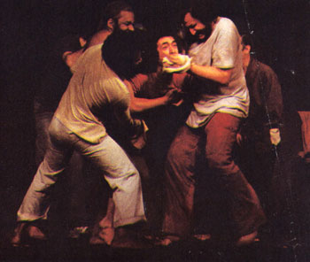
Barrela
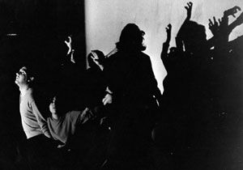
Reportagem de um Tempo Mau
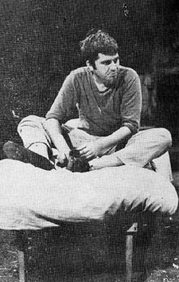
Dois Perdidos numa Noite Suja
Dia Virá
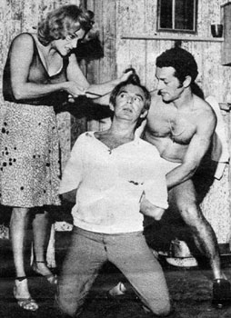
Navalha na Carne
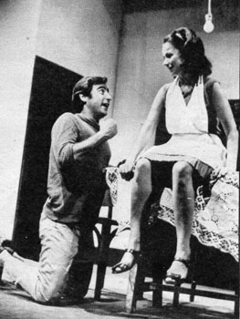
Quando as Máquinas Param
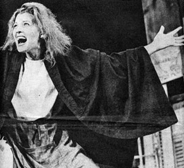
Homens de Papel
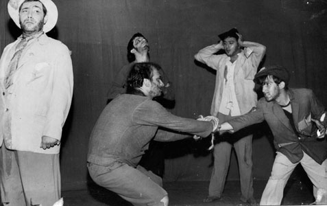
Jornada de um Imbecil até o Entendimento

O Abajur Lilás
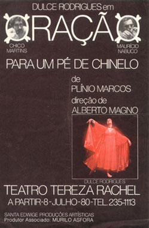
Oração para um Pé-de-Chinelo
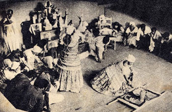
Balbina de Iansã
PM
Feira Livre
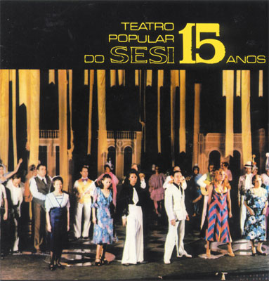
Noel Rosa, o Poeta da Vila e Seus Amores
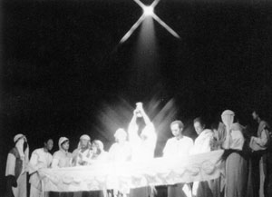
Jesus-Homem
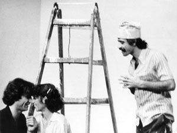
Sob o Signo da Discoteque
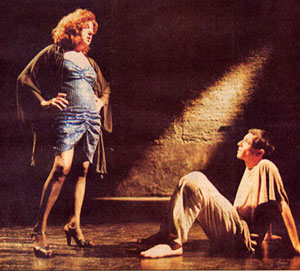
Querô, uma Reportagem Maldita
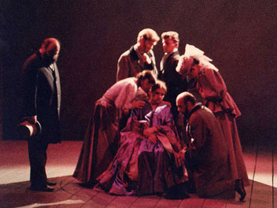
Madame Blavatsky
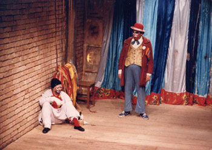
Balada de um Palhaço
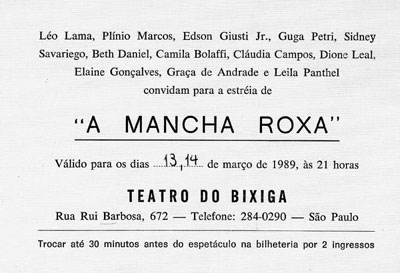
A Mancha Roxa
O Coelho e a Onça
A Dança Final
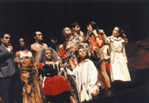
O Assassinato do Anão do Caralho Grande
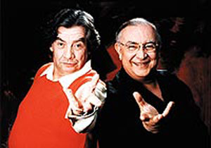
O Homem do Caminho
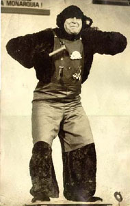
Verde que Te Quero Verde
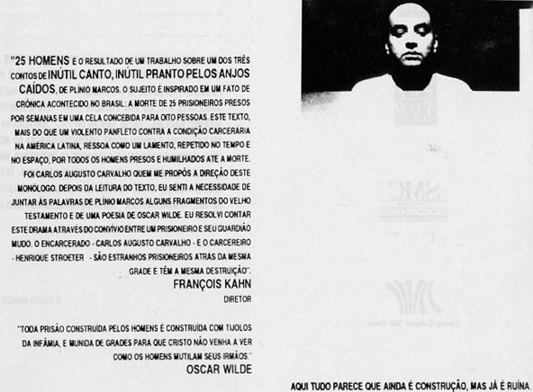
Vinte e Cinco Homens